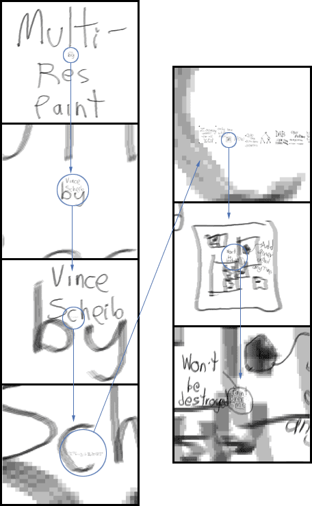
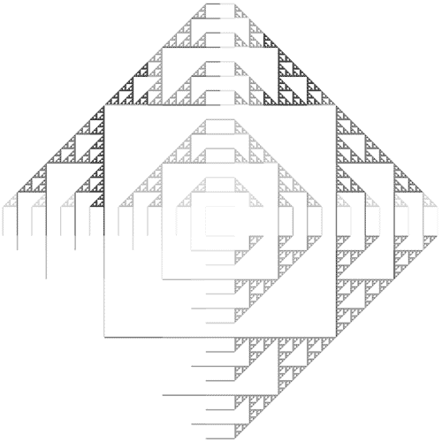

236 Project
Painty Paint!
(turned into Multiresolution Paint for
DAB)
proposal and progress
reports are here
cool pictures at the
bottom
Final Report
Multiresolution Paint within the DAB
painting system
Vincent Scheib
Overview
The desired implementation of a multiresolution
image format within the DAB system was not accomplished. The motivation
for a multiresolution image format, specific requirements it must meet,
and the complications encountered while trying to implement a system into
DAB are described.
Attention is given to the topic of multiresolution
images, and specifically wavelet based images, as I was not familiar with
the concepts, and they proved more difficult than I had expected.
Finnaly, an implementation of a multiresolution
image was completed, using only the 'over' painting operation (alpha blending).
Multiresolution Painting
A raster image samples a 2D function, usually
of color, discretely. A multiresolution image allows for the sampling frequency
to vary, possibly arbitrarily and or unboundedly.
The most commonly desired feature of multiresolution
images is the following:
Detail can be added at any place. There
is no limit to the detail which can be added. This allows for images to
contain dramatic scale differences.
How a Multiresolution Canvas Would Improve
DAB
DAB uses a 2D paint blending algorithm to
simulate a brush being moved across it’s surface. Between two discrete
locations of a brush in time, the footprint of that brush (the part in
contact with the surface being painted) must be simulated to be in contact
with the canvas.
Thus, for each discrete position between
the current position of the brush and the last position, each portion of
the footprint must be blended with a portion of the canvas.
Because the footprint is 2D, and each pixel
in the footprint is unique, an n2 algorithm must be used at each position.
The footprint is moved along a line or curve, and is blended m times. Thus
the paint blending operation is O(n2m), and because both n and m rely on
the resolution of the canvas, it is truly O(r3), where r is the resolution
of the canvas.
A Multiresolution implementation of the
canvas would allow all paint operations to occur at a fixed resolution,
for which the system operates at an interactive rate, regardless of the
detail present on the canvas.
Currently, the system [duel GigaHertz
processors, Gig of RAM] is barely able to support a 1024x1024 image, which
is not a sufficient resolution when an artist is expected to be creating
high quality work.
Further, the basic ability to allow the
artist to zoom in to any detail to work would be most useful. A computer
monitor is limited in the scale of images it can display. An artist, theoretically,
could work on a mural the size of a wall within DAB, if only they could
navigate it and maintain interactive rates.
Working on such large images would require
enormous amounts of memory. However, if memory can be used only when required
to store high detail work, then this limitation can be drastically reduced.
An easy example is a painting signed by an artist. The small signature
may require much higher detail than the rest of the image.
Re-execution
One method used to create multiple resolution
images is known as Re-execution. An image at arbitrary resolution can be
generated if the artist’s movements are recorded, and then executed again
at another resolution. This allows the artist to work interactively at
a low resolution, while the high resolution can be computed later at less
than interactive speeds.
However, This method was not feasible to
implement with DAB in its current state. The complex 3D footprint of the
brush in DAB is highly dependant on the simulation and subdivision systems.
Correctly recreating these at higher resolutions is non trivial, and not
part of the system which I am familiar with.
Additionally, this contradicts one of the
important features of DAB: Artist’s interaction in a WYSIWYG environment.
The artist currently can see exactly what they are producing, where a re-execution
strategy would not allow this. Specifically over large scale factors. E.G.
an artist can not carefully place detail which is at 32 times the resolution
they are working in.
Separation of Layers
The original method I had intended to work
with was a separation of layers approach. New images would be dynamically
created at appropriate resolutions to contain the detail work of the artist.
In essence, the image would have many high resolution insets.
There are complicated problems at the borders
between resolutions. Applying scale changes to propagate work across these
boundaries generates many special cases. EG, a 2x resolution brush stroke
crossing over a T boundary between 1x, 4x, and 8x image segments requires
a rather complicated software implementation.
Ken Perlin, and Luiz Velho offer
a better argument against this method in [3] (section 3). Besides boundary
issues, they point out issues in updating. Specifically, if an artist draws
at high resolution, then over that area in a low resolution, and then again
at a high resolution, the system must maintain a record of when each operation
was performed. They are focusing on the ‘over’ paint operation, which is
a simple alpha blending of paint over old paint. They note that this operation
is non-commutative (A over B over C is not equal to B over A over C).
This approach was taken by Takeo Igarashi
and Dennis Cosgrove in [2]. They designed a system for ‘casual painting’
of 3D objects. The object is given a solid base color. Painting a portion
of the object causes the generation of an small image for just the portion
of the texture map. Multiresolution capability is provided by always using
the screen resolution when creating a new image. The user can zoom in and
paint very fine detail. It will be captured at the resolution of the screen.
These sub images always replace whatever image was previously there. Painting
over high resolution with a low resolution causes the high resolution to
be destroyed. The authors noted several limitations to this method for
anything beyond simple ‘casual’ painting.
Lazy Evaluation
Deborah F. Berman, Jason T. Bartell, and David
H. Salesin offer a very attractive approach to the problem in [1]. I worked
to extend this method, and will explain their approach.
The lazy evaluation is well suited to a
Bandpass pyramid. Perlin and Velho describe the Lowpass and Bandpass pyramids
well in section 2 of [4]. Simply, the lowpass pyramid contains the image
at many resolutions, where the bandpass pyramid contains the difference
of the image at one higher resolution. Thus, the bandpass pyramid starts
with one pixel, and each additional image can be added to the previous
image to gain further detail.
The bandpass pyramid therefore has the
advantage that information is not stored redundantly. Specific frequencies
are stored at only one level. Roughly put, modifying the image at a specific
resolution requires only an update at that specific resolution, the enormous
amount of pixels at higher resolutions need not be modified directly.
Berman et al make use of the Haar wavelet,
the simplest wavelet basis. This provides a form of a bandpass pyramid,
however the wavelet representation is not essential to their multiresolution
algorithm. Detailed information on the Haar wavelet, and how it can be
used in computer graphics, can be found in [5] and [6]. I found this informative,
however not critical to the problems I am trying to address. The Haar wavelet
is so simple, it need not even be used. In [3] a B-Spline wavelet is used,
for increased image quality when decomposing and extrapolating data. However,
the problems encountered deal with principles common to all bandpass pyramids,
regardless of which wavelet is used.
They key to the lazy evaluation is to not
be forced to modify data until it is displayed. The paper presents an order
O(m+j) algorithm for display. Painting operations occur in a fixed resolution
image cache. When the user navigates to other portions or scales of the
image, the data structure is updated to reflect the changes made.
The paint operations of ‘over’, ‘under’,
‘in’, and ‘erase’ are supported. These are very basic painting operations,
which rely basically on an alpha blending operation. It is worthwhile to
consider the ‘over’ operation in detail.
Over is defined as:
NewColor = AppliedColor * alpha + PreviousColor
* (1 - alpha)
In the bandpass pyramid, the current color
is available at a node, and the difference from that color to the next
higher resolution is stored. Modifying the current color is a trivial task
up updating the difference from the previous node. Updating the higher
resolution data is where this representation excels. In a lowpass pyramid
all higher resolution pixels would require updating. However, in the bandpass
pyramid, these are stored as a difference from the current node. The ‘over’
operation obscures these pixels partially. Therefore, the differences of
the higher resolution pixels need only be scaled down! This can be accomplished
by storing a single scaling factor in each node. Only a node at the current
resolution must be updated. During display, scaling factors are accumulated
together as the tree is traversed.
This is very significant because it avoids
modifying such large volumes of data. I attempted to find similar methods
for use with DAB.
DAB and the Lazy Evaluation Method: parts
that work
Currently DAB makes use of 9 channels of information
(3 Color for wet paint, 3 Color for dry paint, 3 Volume representations
(1 wet, 2 dry)), compared to the RGBA of most paint programs.
The difficulty is in finding an extrapolation
scheme. When a user paints over an area of higher resolution the high resolution
data must be updated. Berman et al found that the ‘over’ and ‘erase’ operations
can be handled most efficiently by storing the scalar of occlusion. The
blending operations in DAB are more complex than this, however.
The dry volume information in DAB poses
a difficulty only in the drying process. The user can not dry paint selectively
in DAB, and therefore we need not concern ourselves with it’s extrapolation.
The only problem with drying in a multiresolution image is that the entire
canvas must be dried at once. This operation is almost non-interactive
already for a 1024x1024 image. Amortizing this cost was considered by drying
only a portion of the image at a time. However, this would cause artifacts
to show up if the user paints over a ‘just dried’ region and a ‘soon to
be dried’ region. The paint deposited in the two regions will differ, and
the bump map rendering of the height field will show this boundary artifact.
The drying operation also suffers from
requiring a decomposition of the entire image. All the highest resolution
pixel values must have their volume adjusted, but their color values must
be adjusted as well. The drying operation modifies the color of the ‘dry
layer’ such that after the drying operation, the color of the blended wet
layer over dry layer is the same. Performing this color blending will require
an full decomposition of the highest resolution – touching every node in
the tree.
The wet volume information could be handled
in the following way. As the user paints, record the difference in paint
volume from when the user started painting. If the paint volume has decreased,
multiply all higher resolution volume units by NewPaintVolume / OldPaintVolume.
This will remove the correct volume of paint from the high resolution pixels.
It will also maintain the high frequency detail.
If volume has been added, it can be added
to the high resolution pixels in a constant manner.
DAB and the Lazy Evaluation Method: parts
that do not work
The above considerations affect only the efficiency
of the algorithm. The true problem is with color blending as the user paints.
DAB differs from most painting programs in that it uses a bi-directional
blend operation.
Berman et al used only simple paint operations
which effectively cover higher resolution data. In effect, they can store
all the user’s work in a ‘foreground image’, and then apply those changes
to the image below. In the multiresolution case, this simply requires applying
the changes to possibly many pixels for each foreground image. However,
lazy evaluation works here because all the changes can be gathered in one
layer, and then applied with one operation.
DAB can not use lazy evaluation. The bi-directional
blending operations use both the foreground and background images at each
simulation step. A separation can not be made between the current user’s
work, and the canvas below.
Thus, the user actually changes all paint
on any pixels that they touch. This can not be applied in a partial manner
to the high resolution pixels in that area. Therefore, the high resolution
data is simply lost. But the actual changes made by the user should not
destroy the high resolution information.
An example:
· The user zooms to very high resolution,
and paints. Varying color and volume information is deposited on the canvas.
· The user then zooms out to a
lower resolution. A glazing brush stroke is applied over a large portion
of the high detail work. The glazing stroke is not completely opaque –
the color of the paint below shows through, as does its volume.
· Additionally, (and this is where
DAB differs from others) the high detail paint has been blended into the
brush, and back down to the canvas. Paint is not simply added to the canvas,
it is taken away, modified, and replaced many times. It is clear from current
work with DAB that this operation will not obliterate the previous paint,
but only modify it.
I have failed to find a method to lazily
modify the paint model in this situation.
The brute force approach would be to store
each simulation step taken, the paint removed and added in each step, for
each pixel, and to re-execute all those simulation steps for all higher
resolution pixels. This would not be accurate, because the operations performed
on the lower resolution image may differ from the high resolution due to
clamping of volume to the 0 – 1 range. Additionally, this would require
very large amounts of dynamic storage.
Ignoring the multiple blending operations,
and attempting to blend from the final result has not lead to a solution
either.
Conclusion
A solution for multiresolution painting within
the DAB system was not found to be feasible. The available literature on
multiresolution painting deals only with the simplest of paint blending
operations, and does not extend to the paint model used in DAB. The interactive
constraint, including the artist’s ability to see exactly the detail that
they are painting, further limit the options available.
Aditional Work
Everything in this report is the result of
reading papers and working things out on paper. For project day, it is
nice to have a demo. Thus, I put together a very quick implementation of
the system described in [1]. I did not use wavelets, and the system still
works, I am still not sure why they used wavelts in that system.
Screen Shots and Breif Description:

Zooming in by 223, or 838,608
times!
Painting at the lowest resolution will
update even the finest detail at the highest resolution.
|
This single multiresolution image contains
all of the slides I used to give my presentation (they're just inside the
'c' in "Scheib"). The slide focused on here is sketching out the general
idea of having a large image with just portions at high detail. The entire
multires image loaded from disk in about 10 seconds.
The multiresolution painting program allows
the user to zoom in and add detail anywhere. Zooming out and painting over
the highest resolution areas is still fast and efficient. The smallest
text in the image, saying “Paint Over Me” can be covered with a thin layer
of paint while not destroying it. This can be done even when zoomed out
all the way. A 'regular' image could not allow this, because far too many
pixels would be modified at once.
If the entire image had been stored at
the resolution of the finest details, it would be 223 X 223
= 70,000,000,000,000 pixels in size!
During the presentation, the text “Paint
Over Me” was displayed 3 feet tall. If the entire image could have been
shown at that resolution, it would be 595 miles tall!

A bug in an early implementation:
oddly coupled Sierpinski Triangles.
|
A bandpass quadtree is used to store the
image. The tree must be traversed ouside of the active image area in order
to reach some of the final pixel values. However, traversing the entire
tree would be far too costly. The tree must be pruned carefully, allowing
steps outside the active area, but once outside only moving back towards
the active area.
References
[1]
Deborah F. Berman, Jason T. Bartell, and
David H. Salesin
Multiresolution Painting and Compositing
(1994)
http://citeseer.nj.nec.com/berman94multiresolution.html
[2]
Takeo Igarashi and Dennis Cosgrove
Chameleon : 3D Paint for Teddy 2001
http://www.mtl.t.u-tokyo.ac.jp/~takeo/chameleon/chameleon.htm
[3]
Ken Perlin Luiz Velho
B-spline Wavelet Paint (1994?)
http://citeseer.nj.nec.com/397590.html
[4]
Ken Perlin, Luiz Velho
Live Paint: Painting with Procedural Multiscale
Textures (1995)
http://citeseer.nj.nec.com/387874.html
[5]
Eric J. Stollnitz Tony D. DeRose David
H. Salesin
Wavelets For Computer Graphics, A Primer:
Part 1&2 (1995)
http://grail.cs.washington.edu/projects/wavelets/article/
[6]
http://www.multires.caltech.edu/teaching/courses/waveletcourse/
|